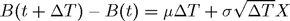
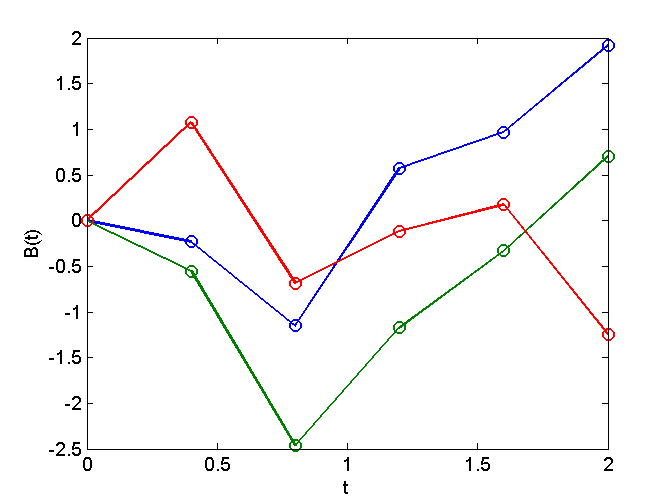

Contents
function demoCode_arithmeticBrownianMotion()
demoCode_arithmeticBrownianMotion
format short
Parameters for the simulation
t0 = 0; % initial time B0 = 0.0; % initial value of the Brownian trajectories mu = 1; % drift sigma = 2; % diffusion M = 3; % Number of simulated trajectories N = 5; % Number of simulation steps T = 2; % length of the simulation interval [t0,t0+T] % time step for the simulation deltaT = T/N; % monitoring times t = linspace(t0,t0+T,N+1);
Simulate Gaussian white noise
% Gaussian white noise
X = randn(M,N)
X =
-0.4998 -1.0438 1.0481 -0.0049 0.4396
-0.7526 -1.8267 0.7039 0.3486 0.5009
0.5324 -1.7071 0.1329 -0.0836 -1.4387
Compute the increments of the Brownian process

d = mu*deltaT + sigma*sqrt(deltaT)*X % M rows, N comums
d =
-0.2323 -0.9204 1.7257 0.3938 0.9561
-0.5519 -1.9107 1.2903 0.8410 1.0336
1.0734 -1.7594 0.5681 0.2943 -1.4198
Prepare for simulation
B = [B0*ones(M,1) d] % M rows, (N+1) columns
B =
0 -0.2323 -0.9204 1.7257 0.3938 0.9561
0 -0.5519 -1.9107 1.2903 0.8410 1.0336
0 1.0734 -1.7594 0.5681 0.2943 -1.4198
Simulate arithmetic Brownian motion
B = cumsum(B,2) % simulation
B =
0 -0.2323 -1.1526 0.5731 0.9670 1.9231
0 -0.5519 -2.4626 -1.1723 -0.3313 0.7023
0 1.0734 -0.6860 -0.1178 0.1765 -1.2434
Sample statistics
% sample mean E_B = mean(B) % row vector with (N+1) columns % sample standard deviation std_B = std(B) % row vector with (N+1) columns
E_B =
0 0.0964 -1.4337 -0.2390 0.2707 0.4607
std_B =
0 0.8611 0.9211 0.8790 0.6542 1.5970
Plot the simulated trajectories
figure(1); clf; plot(t,B,'o-'); xlabel('t'); ylabel('B(t)')